OliveTin
Give safe and simple access to predefined shell commands from a web interface.
See it in action more with some OliveTin demo videos on YouTube.
Easily turn shell commands into buttons
Define an action in config, refresh the UI, and you get a clickable button — no admin panels required.
actions:
- title: Restart Media Server
icon: restart
shell: echo "Restarting media server..."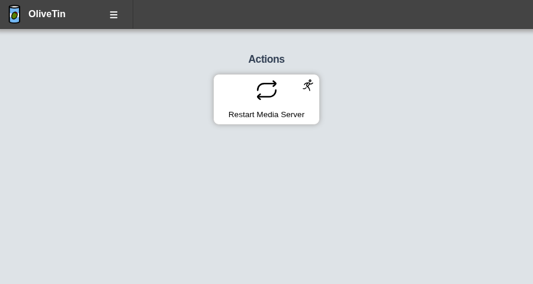
Safe access for less technical people (or AI agents)
Give family or junior admins a short list of approved buttons — not SSH, not a shell.
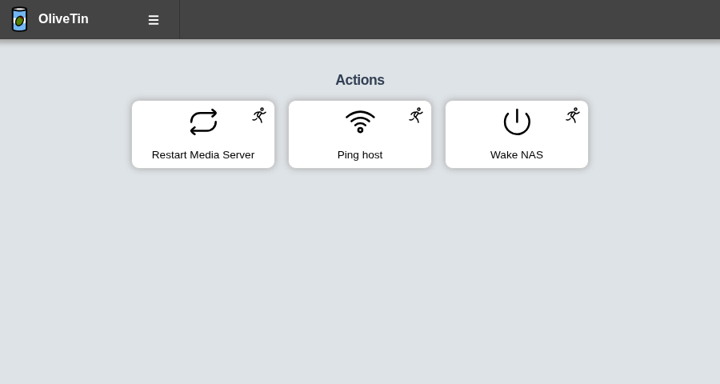
- eg: Give your family a button to systemctl restart media-server
- eg: Give junior admins a simple web form with dropdowns, to start your custom script. backupScript.sh --folder {{ customerName }}
- eg: Enable SSH access to the server for the next 20 mins firewall-cmd --add-service ssh --timeout 20m
The same model helps with AI agents: instead of open-ended shell access, an agent only gets the actions you publish. That makes behaviour easier to reason about, and every run is logged — who (or what) started it, with which arguments, and what came back — for transparency and auditability.
See what ran
Every execution has output, status, and history you can open again later.
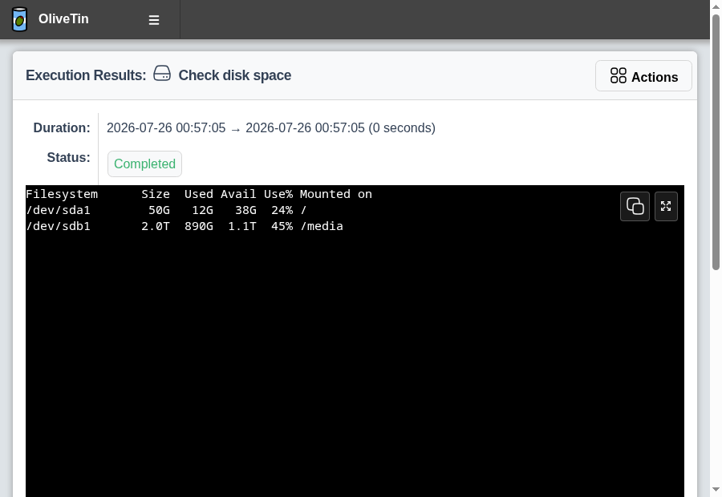
Control arguments with forms
Typed arguments turn command-line options into dropdowns and validated fields.
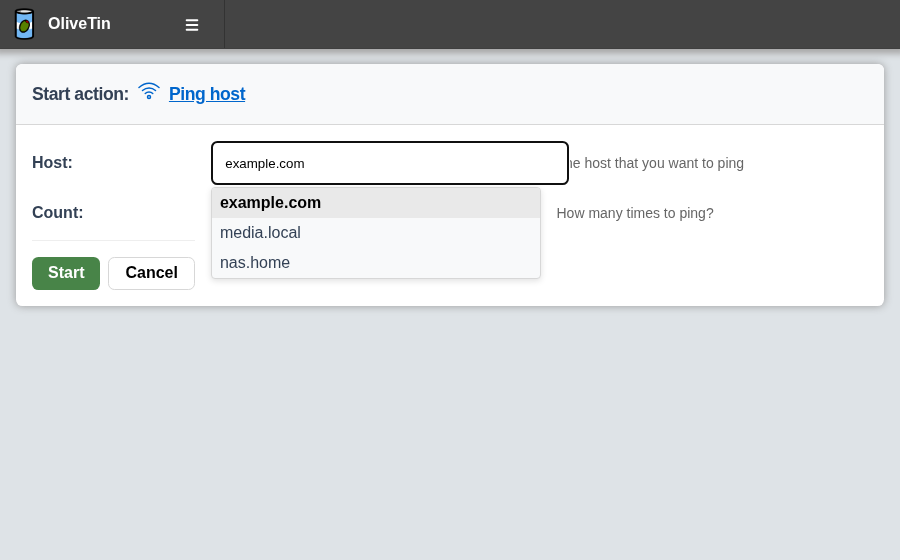
OliveTin only uses shell or exec
It is deliberately lightweight. This makes it agnostic, and portable across tiny ARM and RISC devices up to Linux VMs and Containers, macOS, Windows, and more. There is no plugin system, no extension marketplace, and no built in support for any automation tool or automation system.
If a program is installed on the host (or reachable over SSH), OliveTin can run it. Your existing scripts, CLIs, and services stay the source of truth — OliveTin is the safe front door, not another stack that reimplements them.
- No waiting for an official integration or community plugin for the tool you already use
- No heavyweight platform layer that tries to own every workflow
- Fewer moving parts: a small binary, YAML config, and the commands you choose
OliveTin stays flexible because it only uses primitives. Anything your shell can run, it can turn into a button, webhook, cron job, event or similar.
Login in almost any way
OliveTin supports several login options — from simple local users to OAuth2, JWT, and reverse-proxy trusted headers.
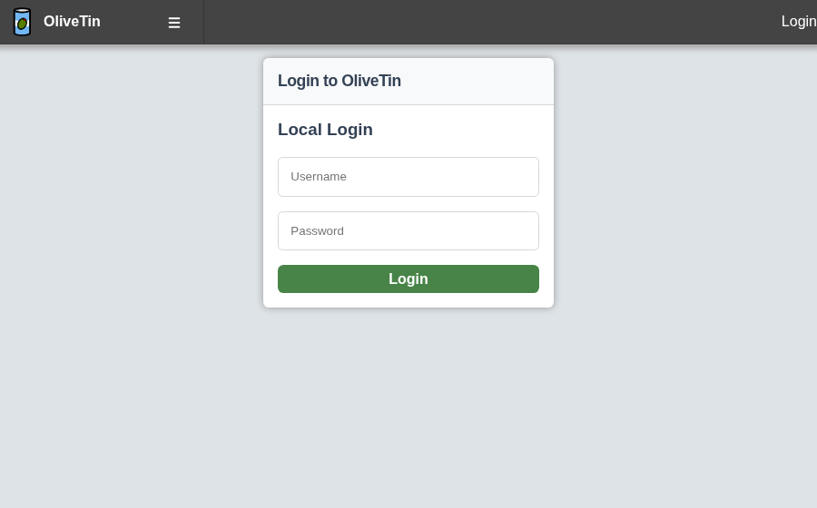
- Local users — username and password in config.yaml
- OAuth2 — including guides for common identity providers
- JWT
- Trusted header authorization — common with reverse proxies
- API keys — for scripts and integrations
- Example: require login
Same app, different permissions
Access Control Lists decide who can view or run each action.
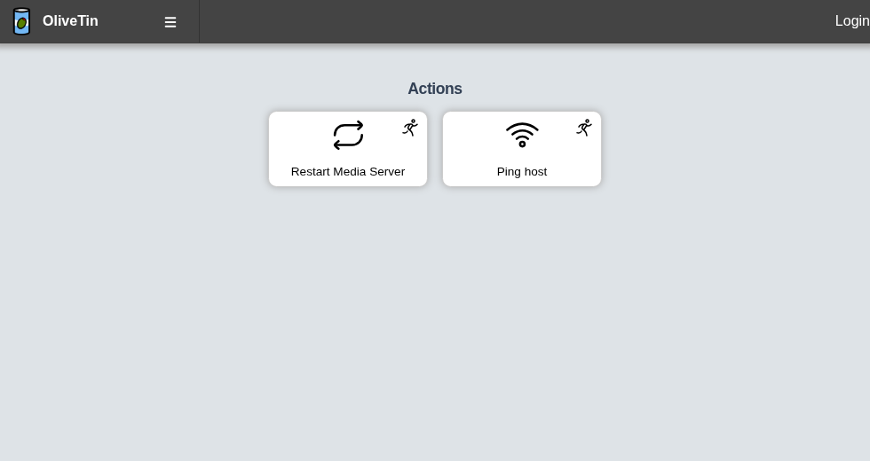
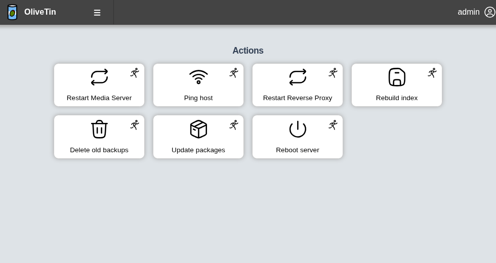
Generate templated buttons based on lists of things
Entities are lists of things - in YAML or JSON format. You can generate actions from lists of servers, containers, people, folders, days of the week or any other things..
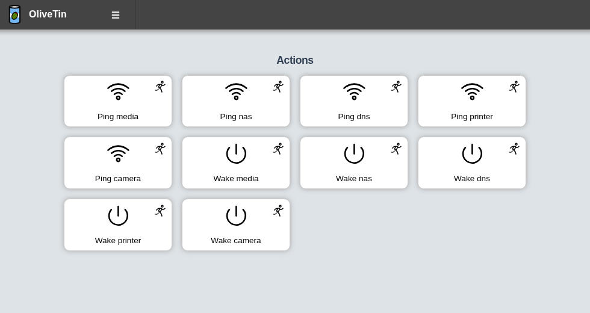
Organize with dashboards
Group actions into folders and fieldsets so busy setups stay clear.
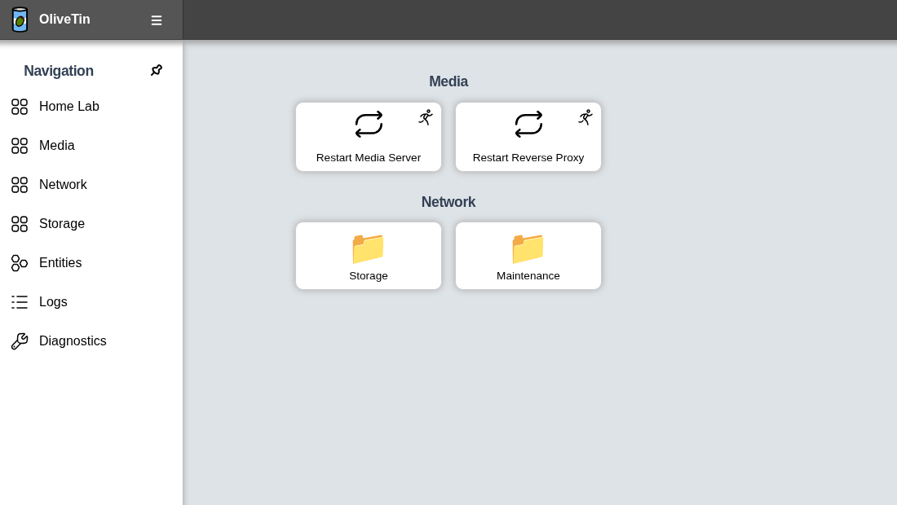
Execution based on…
Actions are not only started by clicking a button. OliveTin can also run them when something else happens.
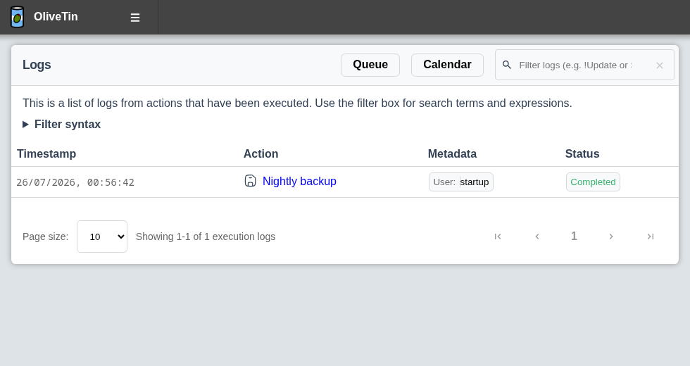
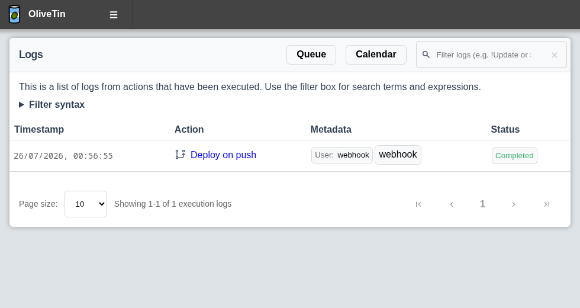
Remote commands over SSH
Buttons can run on other hosts — OliveTin stays the simple front door.
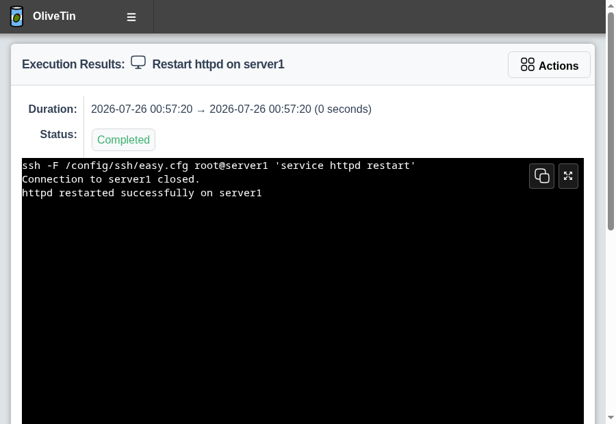
From a phone or wall tablet
Simplify complex or long-running commands and put them where people already are.
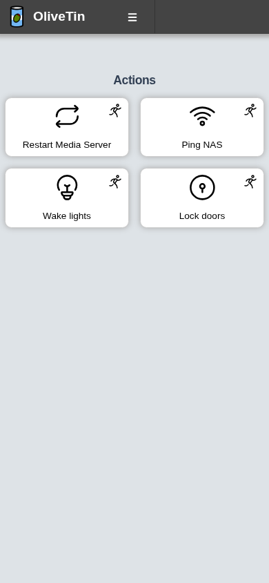
- eg: Expose complex commands on touchscreen tablets stuck on walls around your house. wake-on-lan aa:bb:cc:11:22:33
- eg: Run long-lived commands on your servers from your cell phone. apt update && apt upgrade -y
- eg: Define complex commands with lots of preset arguments, and turn a few arguments into dropdown select boxes.
Features summary
- Flexible login Local users, OAuth2, JWT, trusted headers, and API keys — use the auth that already fits your setup.
- Access Control Lists Decide exactly who can view or run each action — guests, family, or junior admins get only the buttons you allow.
- Typed arguments Turn commands into forms with dropdowns and validated inputs, so users can fill in options without a free-form shell.
- Entities Generate actions from lists of hosts, containers, or other “things” on disk — one template, many buttons.
- Dashboards Organize actions into folders and fieldsets so busy setups stay clear instead of one long button grid.
- Flexible triggers Run actions on cron, webhooks, calendar files, or when files are created or changed in a directory.
- YAML configuration Define every button in simple config-as-code — easy to version, copy, and share.
- Integrate with anything It just runs shell commands — curl, containers, SSH, your own scripts — so anything your shell can do becomes a button.
Configuration Example
YAML - Configuration as code, rather than configuration via a million little options in an admin panel :-)
# Listen on all addresses available, port 1337
listenAddressSingleHTTPFrontend: 0.0.0.0:1337
# Choose from INFO (default), WARN and DEBUG
logLevel: "INFO"
# Actions (buttons) to show up on the WebUI:
actions:
# Docs: https://docs.olivetin.app/solutions/container-control-panel/index.html
- title: Restart Media Server
icon: restart
shell: systemctl restart media-server
# This will send 1 ping
# Docs: https://docs.olivetin.app/action_examples/ping.html
- title: Ping host
shell: ping {{ host }} -c {{ count }}
icon: ping
arguments:
- name: host
title: host
type: ascii_identifier
default: example.com
- name: count
title: Count
type: int
default: 1
# Restart the web server on host "webserver1"
# Docs: https://docs.olivetin.app/action_examples/ssh-easy.html
- title: Restart web server
icon: restart
shell: ssh root@webserver1 'systemctl restart web-server'
Find out all about how to configure OliveTin in the Configuration section of the documentation.
Installation
Installation instructions can be found on the OliveTin installation documentation page.
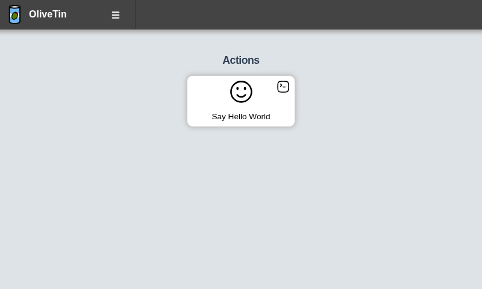
Open Source & No Nonsense
This project is open source, and feature requests, bugs, security issues and similar can all be raised via the OliveTin new issue page in the OliveTin GitHub repository.
Contributions to documentation, code, and other parts of the project are most welcome. You can find the contribution guidelines in the repository.
- All code and assets are Open Source (AGPL) and free software.
- No company is paying for development, donations & sponsorship are not accepted.
- No separate core and premium, plus or pro version. No paid-for extra features or plugins.
- No SaaS service or "special cloud version".
- No "anonymous data collection", usage tracking, user tracking, telemetry or email address collection. (Note: Update checks in versions prior to 2024.06.02 could be considered unwanted tracking. These were completly removed.).
- No requests for reviews in any "app store" or feedback surveys.
- No prompts to "upgrade to the latest version".
- No internet-connection required for any functionality.